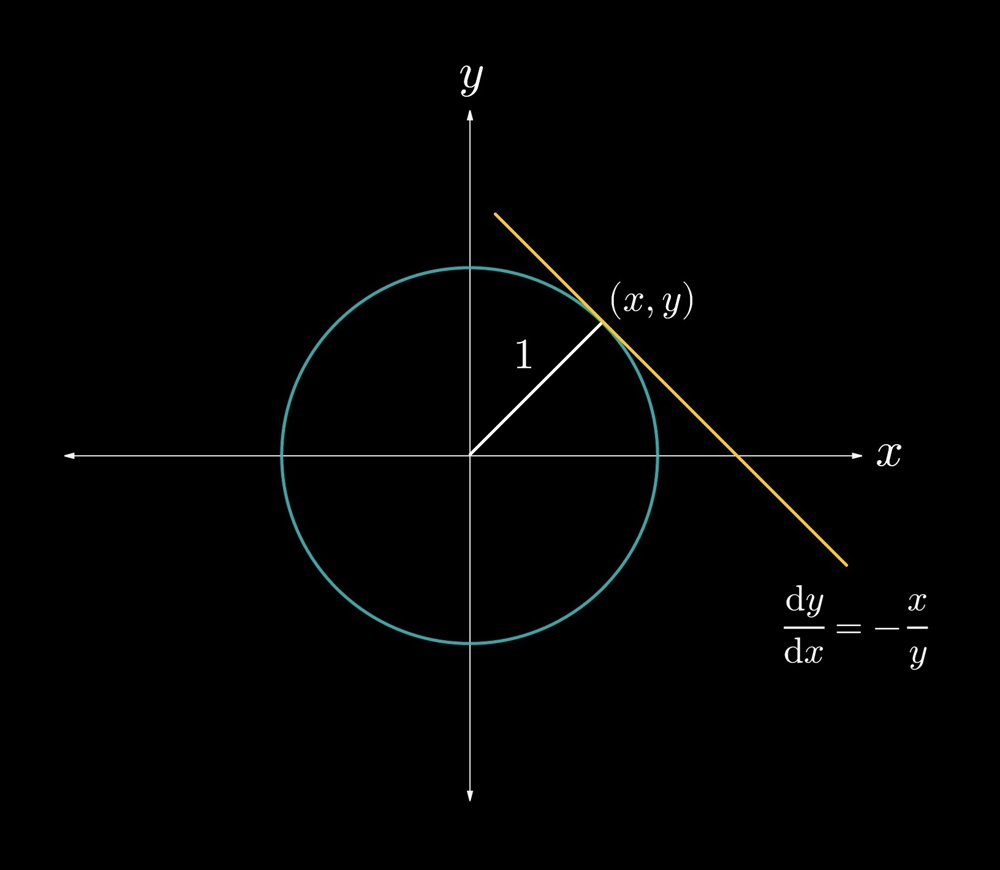
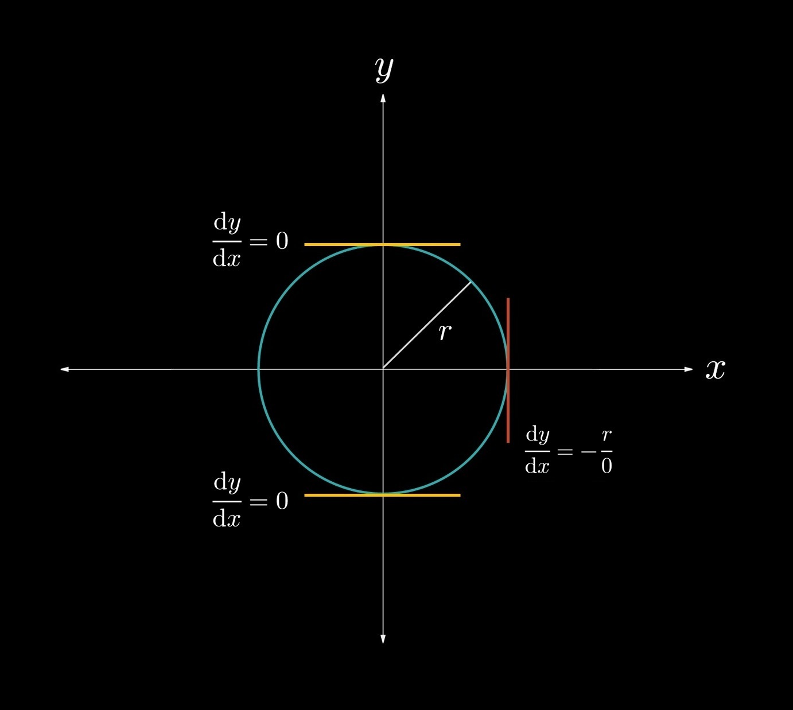
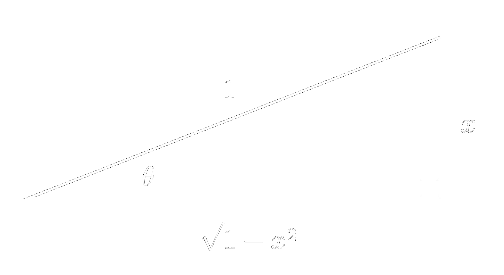

2.5 — Implicit Differentiation
Up to this point, we have worked with differentiating single-variable functions in the form \(y = f(x)\). In this section, however, we will discuss how to differentiate curves in the form \(f(x,y) = 0\), in which \(y\) is not defined explicitly as a function of \(x\). We must therefore solve implicitly for \(\displaystyle \frac{\textrm{d}y}{\textrm{d}x}\). Take, for example, $$ x^2 + y^2 = 1,$$
\((1)\)
which is the equation of a circle with radius \(1\). Suppose that we want to find the slope of the tangent line at the point \((x,y)\). In this case, we cannot use the methods of differentiation that we have learned thus far. We must therefore perform implicit differentiation; let us first differentiate both sides with respect to \(x\). $$ \frac{\textrm{d}}{\textrm{d}x}\left(x^2 + y^2\right) = \frac{\textrm{d}}{\textrm{d}x}\left(1\right). $$\((2)\)
Notice that, in this case, \(y\) is defined implicitly as a function of \(x\). Thus, we will think of \(y\) as \(y(x)\) to indicate clearly that it is a function of \(x\). We then obtain $$ 2x + 2y \frac{\textrm{d}y}{\textrm{d}x} = 0. $$\((3)\)
Notice that, because \(y\) was a function of \(x\), we had to apply the chain rule when differentiating \(2y\). We now solve for \(\displaystyle \frac{\textrm{d}y}{\textrm{d}x}\): $$ \frac{\textrm{d}y}{\textrm{d}x} = -\frac{x}{y}. $$\((4)\)
We see that in situations warranting implicit differentiation, the expression for \(\displaystyle \frac{\textrm{d}y}{\textrm{d}x}\) is usually defined in terms of both \(x\) and \(y\).
Fig. 2-5.1. The graph of the circle \(\displaystyle x^2 + y^2 = 1\) is shown, and the tangent line to the circle at the point \((x,y)\) is shown. The slope of the tangent line at this point is \(\displaystyle -\frac{x}{y}\).
We see that, at a point \((x, y)\) along a circle with any radius \(r\), \(\displaystyle \frac{\textrm{d}y}{\textrm{d}x} = -\frac{x}{y}\), as shown in Fig. 2-5.1 with the circle with radius \(1\). $$\tag*{$\blacksquare$}$$Find \(\displaystyle \frac{\textrm{d}y}{\textrm{d}x} \) for the curve \(\displaystyle x^2 y + 2y = 16\).
Differentiating both sides gives $$ \frac{\textrm{d}}{\textrm{d}x} \left[x^2 y + 2y\right] = \frac{\textrm{d}}{\textrm{d}x}(16) $$ $$ 2xy + x^2 \frac{\textrm{d}y}{\textrm{d}x} + 2 \frac{\textrm{d}y}{\textrm{d}x} = 0 $$ $$ \frac{\textrm{d}y}{\textrm{d}x} \left(x^2 + 2\right) + 2xy = 0$$ $$ \bbox[border: 2px solid white, 2pt]{\frac{\textrm{d}y}{\textrm{d}x} = \frac{-2xy}{x^2 + 2}.} $$ $$\tag*{$\blacksquare$}$$
Find \(\displaystyle \frac{\textrm{d}y}{\textrm{d}x} \) for the curve \(\displaystyle 2x^3y -xy^2 = 16\).
We will differentiate both sides with respect to \(x\) to obtain \(\displaystyle \frac{\textrm{d}y}{\textrm{d}x}\). $$ \frac{\textrm{d}}{\textrm{d}x}\left(2x^3y - xy^2\right) = \frac{\textrm{d}}{\textrm{d}x}(16) $$ $$ 2 \left(3x^2 y + x^3 \frac{\textrm{d}y}{\textrm{d}x} \right) - \left(y^2 + 2xy \frac{\textrm{d}y}{\textrm{d}x} \right)= 0 $$ $$ 6x^2 y + 2x^3 \frac{\textrm{d}y}{\textrm{d}x} - y^2 - 2xy \frac{\textrm{d}y}{\textrm{d}x} = 0 $$ $$ \frac{\textrm{d}y}{\textrm{d}x} \left(2x^3 - 2xy\right) = y^2 - 6x^2y $$ $$ \bbox[border: 2px solid white, 2pt]{\frac{\textrm{d}y}{\textrm{d}x} = \frac{y^2 - 6x^2 y}{2x^3 - 2xy}.} $$ $$\tag*{$\blacksquare$}$$
Implicit differentiation is useful for finding vertical and horizontal tangents. For a point to have a horizontal tangent, \(\displaystyle \frac{\textrm{d}y}{\textrm{d}x}\) must equal \(0\). Conversely, for a point to have a vertical tangent, \(\displaystyle \frac{\textrm{d}y}{\textrm{d}x}\) must be in the form \(\displaystyle \frac{k}{0}\), where \(k \ne 0\).

Fig. 2-5.2. A circle of radius \(r\) is shown. Horizontal tangents to the circle occur when \(\displaystyle \frac{\textrm{d}y}{\textrm{d}x} = 0 \), and vertical tangents occur when \(\displaystyle \frac{\textrm{d}y}{\textrm{d}x} = \pm \frac{r}{0}\).
Find all of the horizontal tangents to the curve \(\displaystyle x^3 - x^2y = 2\).
We will differentiate both sides with respect to \(x\) to solve for \(\displaystyle \frac{\textrm{d}y}{\textrm{d}x}\). $$ \frac{\textrm{d}}{\textrm{d}x}\left(x^3 - x^2y \right) = \frac{\textrm{d}}{\textrm{d}x}(2) $$ $$ 3x^2 - \left(2xy + x^2\frac{\textrm{d}y}{\textrm{d}x}\right) = 0 $$ $$ 3x^2 - 2xy - x^2 \frac{\textrm{d}y}{\textrm{d}x} = 0 $$ $$ \frac{\textrm{d}y}{\textrm{d}x} = \frac{3x^2 - 2xy}{x^2} = \frac{3x - 2y}{x}. $$ We will now set \(\displaystyle \frac{\textrm{d}y}{\textrm{d}x} \) equal to \(0\): $$ \frac{\textrm{d}y}{\textrm{d}x} = \frac{3x - 2y}{x} = 0. $$ We now have the following system of equations that we can solve to obtain \(x\) and \(y\): $$ 3x - 2y = 0 $$ $$ x^3 - x^2 y = 2 $$ $$ 3x - 2y = 0 \implies y = \frac{3x}{2} $$ $$ x^3 - x^2 y = 2 \implies x^3 - x^2 \left(\frac{3x}{2}\right) = 2 $$ $$ x = \sqrt[3]{-4}. $$ $$ \therefore y = \frac{3\sqrt[3]{-4}}{2}. $$ The point \(\bbox[border: 2px solid white, 2pt]{\left(\sqrt[3]{-4}, \frac{3\sqrt[3]{-4}}{2} \right)}\) is the point at which the curve has a horizontal tangent. $$\tag*{$\blacksquare$}$$
Find all of the vertical tangents to the curve \(\displaystyle xy - y^2 = 4\).
We will differentiate both sides with respect to \(x\) to solve for \(\displaystyle \frac{\textrm{d}y}{\textrm{d}x}\). $$ \frac{\textrm{d}}{\textrm{d}x}\left(xy - y^2 \right) = \frac{\textrm{d}}{\textrm{d}x}(4) $$ $$ \left(y + x \frac{\textrm{d}y}{\textrm{d}x} \right) - 2y \frac{\textrm{d}y}{\textrm{d}x} = 0 $$ $$ \frac{\textrm{d}y}{\textrm{d}x} \left(x - 2y\right) = -y $$ $$ \frac{\textrm{d}y}{\textrm{d}x} = \frac{y}{2y - x}. $$ To find the vertical tangents to the curve, we set the denominator of \(\displaystyle \frac{\textrm{d}y}{\textrm{d}x}\) equal to \(0\) to obtain the form \(\displaystyle \frac{k}{0}\), where \(k \ne 0\). $$ \therefore 2y - x = 0. $$ We now have a system of equations that we can solve for \(x\) and \(y\): $$ 2y - x = 0 $$ $$ xy - y^2 = 4. $$ Solving yields $$ 2y - x = 0 \implies x = 2y $$ $$ xy - y^2 = 4 \implies (2y)(y) - y^2 = 4$$ $$ 2y^2 - y^2 = 4 \implies y = \pm 2. $$ We verify that \(\displaystyle \frac{\textrm{d}y}{\textrm{d}x}\) is truly in the form \(\displaystyle \frac{k}{0}\), where \(k \ne 0\), because its numerator is not equal to \(0\). Now we will plug in these values to obtain \(x\).
Letting \(y = -2\) gives $$ 2(-2) - x = 0 \implies x = -4. $$ Letting \(y = 2\) gives $$ 2(2) - x = 0 \implies x = 4. $$ Therefore, the points \(\displaystyle\bbox[border: 2px solid white, 2pt]{(-4, -2)}\) and \(\displaystyle \bbox[border: 2px solid white, 2pt]{(4, 2)}\) are where the curve has vertical tangents. $$\tag*{$\blacksquare$}$$
We can now derive some more derivatives, which will mark the end of the ones we need to know so far. Let us start with the derivative of \(y = \ln(x)\). We know that, because logarithms are inverse to exponential functions, we can rewrite the equation as
\(\displaystyle x = e^y\).
\((1)\)
We will now perform implicit differentiation by taking the derivative of both sides with respect to \(x\).\(\displaystyle \frac{\textrm{d}}{\textrm{d}x} \left( x \right) = \frac{\textrm{d}}{\textrm{d}x} \left(e^y\right)\)
\(\displaystyle 1 = e^y \frac{\textrm{d}y}{\textrm{d}x} \).
\((2)\)
Now, solving for \(\displaystyle \frac{\textrm{d}y}{\textrm{d}x}\), we obtain\(\displaystyle \frac{\textrm{d}y}{\textrm{d}x} = \frac{1}{e^y} = \frac{1}{x} \).
\((3)\)
$$ \frac{\textrm{d}}{\textrm{d}x}\left(\ln(x)\right) = \frac{1}{x}. $$
$$\tag*{$\blacksquare$}$$We can also find the derivatives of inverse trigonometric functions, such as \(\sin^{-1}(x)\), \(\cos^{-1}(x)\), and \(\tan^{-1}(x)\). Let us start with the derivative of \(y = \sin^{-1}(x)\). Because \(\sin(x)\) and \(\sin^{-1}(x)\) are inverses of each other, we can re-express the equation as $$ x = \sin(y). $$
\((1)\)
Now we differentiate both sides with respect to \(x\). $$ 1 = \cos(y) \frac{\textrm{d}y}{\textrm{d}x}. $$\((2)\)
Solving for \(\displaystyle \frac{\textrm{d}y}{\textrm{d}x} \), we obtain $$ \frac{\textrm{d}y}{\textrm{d}x} = \frac{1}{\cos(y)} = \frac{1}{\cos\left(\sin^{-1}(x)\right)}. $$\((3)\)
We need to simplify the expression \(\displaystyle \frac{1}{\cos\left(\sin^{-1}(x)\right)}\). To do so, we will draw a triangle.
In this triangle, we observe that $$ \sin(\theta) = \frac{\textrm{opposite}}{\textrm{hypotenuse}} = \frac{x}{1} = x, $$ $$ \therefore \sin^{-1}\left(x\right) = \theta. $$ In this case, we need \(\displaystyle \cos\left(\sin^{-1}(x)\right) = \cos(\theta)\). We observe that $$ \cos(\theta) = \frac{\textrm{adjacent}}{\textrm{hypotenuse}} = \frac{\sqrt{1 - x^2}}{1} = \sqrt{1 - x^2}. $$
\((4)\)
Therefore, we have $$ \frac{\textrm{d}y}{\textrm{d}x} = \frac{1}{\cos(y)} = \frac{1}{\cos\left(\sin^{-1}(x)\right)} = \frac{1}{\sqrt{1 - x^2}}. $$
\((5)\)
$$ \frac{\textrm{d}}{\textrm{d}x}\left[\sin^{-1}(x)\right] = \frac{1}{\sqrt{1 - x^2}}. $$
$$\tag*{$\blacksquare$}$$Now let us find the derivative of \(\displaystyle y = \cos^{-1}(x)\). We will re-express the equation as $$ x = \cos(y)$$
\((1)\)
and perform implicit differentiation. $$ 1 = -\sin(y) \frac{\textrm{d}y}{\textrm{d}x}. $$\((2)\)
Solving for \(\displaystyle \frac{\textrm{d}y}{\textrm{d}x}\) gives $$ \frac{\textrm{d}y}{\textrm{d}x} = \frac{-1}{\sin(y)}. $$\((3)\)
At this point, we could draw a triangle again, as we did in finding the derivative of \(\displaystyle \sin^{-1}(x)\). However, the algebraic method would be to utilize the Pythagorean identity to re-express \(\sin(y)\) as $$ \sin(y) = \sqrt{1 - \cos^2(y)} = \sqrt{1 - x^2}. $$\((4)\)
Substituting, we obtain $$ \frac{\textrm{d}y}{\textrm{d}x} = \frac{-1}{\sin(y)} = \frac{-1}{\sqrt{1 - x^2}}. $$\((5)\)
$$ \frac{\textrm{d}}{\textrm{d}x}\left[\cos^{-1}(x)\right] = \frac{-1}{\sqrt{1 - x^2}}. $$
$$\tag*{$\blacksquare$}$$The last derivative we will derive in this section is the derivative of \(\displaystyle y = \tan^{-1}(x)\). As we have been doing, rewrite the equation as $$ x = \tan(y). $$
\((1)\)
Differentiating both sides, we get $$ 1 = \sec^2(y) \frac{\textrm{d}y}{\textrm{d}x}. $$\((2)\)
Solving for \(\displaystyle \frac{\textrm{d}y}{\textrm{d}x}\), we obtain $$ \frac{\textrm{d}y}{\textrm{d}x} = \frac{1}{\sec^2(y)}. $$\((3)\)
We know, from the Pythagorean identity, that $$ \sec^2(y) = 1 + \tan^2(y) $$ $$ = 1 + x^2. $$\((4)\)
Substituting, we obtain $$ \frac{\textrm{d}y}{\textrm{d}x} = \frac{1}{\sec^2(y)} = \frac{1}{1 + x^2}$$\((5)\)
$$ \frac{\textrm{d}}{\textrm{d}x} \left[\tan^{-1}(x)\right] = \frac{1}{1 + x^2}. $$
$$\tag*{$\blacksquare$}$$The last topic that we will briefly discuss in this section is second-order implicit derivatives. Let us go back to our example with the circle, as shown in Fig. 2-5.1. We showed that, for a circle of radius \(r\), $$ \frac{\textrm{d}y}{\textrm{d}x} = - \frac{x}{y}. $$
\((1)\)
To find the second derivative, \(\displaystyle \frac{\textrm{d}^2y}{\textrm{d}x^2}\), we will utilize the quotient rule and perform implicit differentiation, as usual. Using these methods, we obtain $$ \frac{\textrm{d}^2y}{\textrm{d}x^2} = - \frac{1 \cdot y - x \frac{\textrm{d}y}{\textrm{d}x}}{y^2} $$ $$ = \frac{x\frac{\textrm{d}y}{\textrm{d}x} - y}{y^2}. $$\((2)\)
Substituting our expression for \(\displaystyle \frac{\textrm{d}y}{\textrm{d}x}\) gives $$ \frac{x \left( \frac{-x}{y}\right) - y}{y^2} $$ $$ = \frac{\frac{-x^2}{y} - y}{y^2}. $$\((3)\)
$$\tag*{$\blacksquare$}$$
SECTION SUMMARY